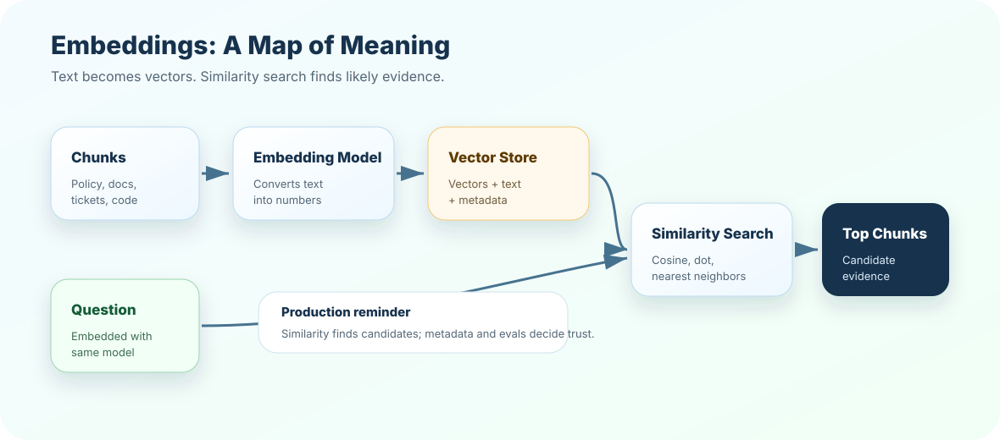

Treating similarity as correctness
Symptom: close chunks are trusted even when they are stale or incomplete.
Better move: combine similarity with metadata, citations, freshness, and evals.
Embeddings turn text into numbers so machines can search by meaning. They are the bridge between human language and retrieval math, but they also have limits that every production RAG builder must understand.
Suppose a user asks, "How do I rotate an API credential?" The document says, "Regenerate the access key and update dependent services." A pure keyword search may struggle because "rotate" and "regenerate" are different words. Embeddings help because they can place related ideas near each other.
Embeddings are excellent candidate finders. They are not a replacement for source governance, metadata, citations, or evaluation.
Each chunk and question becomes a list of numbers.
Similarity functions rank chunks by closeness to the question.
Metadata, reranking, and context budgets decide what reaches the model.
Recall, precision, citation support, and failure analysis decide whether the embedding setup works.
Think of embeddings like a map. Restaurants are near other restaurants. Hospitals are near health services. Airports are near travel locations. If you search for "food near me," the map does not match only the word "food"; it understands related places.
Embeddings create a similar map for meaning. "Password reset," "credential rotation," and "access key regeneration" may live near each other because they are conceptually related.
A vector is just a list of numbers. In simple examples, we can imagine two or three dimensions. In real embedding models, vectors often have hundreds or thousands of dimensions.
"reset password" -> [0.82, 0.10, 0.44]
"change credentials" -> [0.79, 0.13, 0.41]
"quarterly revenue" -> [0.05, 0.91, 0.22]The first two vectors are close because the meanings are related. The revenue vector is far away because it talks about a different topic.
An embedding model reads input and returns a fixed-length numeric vector. Fixed length matters because every chunk and query must live in the same vector space to be compared.
A chunk, query, title, image caption, product description, ticket, policy section, or code snippet.
A model trained to place related items near one another. It can be local, open-source, or API-based.
A vector such as 384, 768, 1024, 1536, or more numbers depending on the model.
Similarity is how we measure closeness between vectors. Common approaches include cosine similarity, dot product, and Euclidean distance.
Measures direction more than raw length. Common for text embeddings.
Often used by vector databases and embedding systems optimized around it.
Measures geometric distance, useful in some settings but not always best for text search.
Retrieval ranks chunks by similarity and returns top-k candidates.
same direction -> high similarity
opposite direction -> low similarity
unrelated direction -> weak similarityEmbeddings are often called dense vectors because most dimensions contain some value. Traditional keyword systems such as TF-IDF or BM25 are sparse because most vocabulary dimensions are zero for a document.
Great for exact terms, product codes, error IDs, names, legal clauses, and rare keywords.
Great for paraphrases, semantic matching, concepts, and natural-language questions.
Combines both. In production, hybrid is often stronger than choosing one camp blindly.
If the user searches for AZ-4032-B, sparse search may outperform dense embeddings because exact tokens matter. If the user asks "Why did my deployment fail after rotating a key?", dense retrieval may help more. A strong RAG system can route or blend both.

documents
-> chunks
-> embedding model
-> vectors + metadata in vector store
user question
-> same embedding model
-> query vector
-> similarity search
-> top chunks
-> grounded answerThe course project stays dependency-light, so this chapter uses a tiny local vector example to teach similarity. It is not a replacement for a real embedding model, but it makes the mechanics visible.
from math import sqrt
def cosine(a, b):
dot = sum(x * y for x, y in zip(a, b))
left = sqrt(sum(x * x for x in a))
right = sqrt(sum(y * y for y in b))
return dot / (left * right)
query = [0.80, 0.12, 0.40]
chunk = [0.78, 0.11, 0.42]
print(round(cosine(query, chunk), 3))In real systems, the embedding model creates the vectors. Your job as an engineer is to choose the model, store vectors correctly, evaluate retrieval, and know when similarity is misleading.
A strong answer sounds like this: "Embeddings represent text as vectors so semantically related chunks can be found by similarity. In RAG, we embed chunks at index time and embed the query at runtime. But vector similarity is only a candidate-generation step; we still need metadata filters, reranking, citations, freshness controls, and evals."
A beginner says, "Embeddings find similar text." A production engineer adds, "Similarity can retrieve stale, unsafe, or incomplete text, so we version models, filter metadata, evaluate Recall@k, and re-index when embedding behavior changes."
Choose five pairs of sentences from your domain. Label each pair as exact match, semantic match, related but unsafe, or unrelated. Then explain whether sparse, dense, or hybrid retrieval should handle each pair and why.
Next, test the mental model in the quiz, then build a tiny similarity searcher in exercises and project.